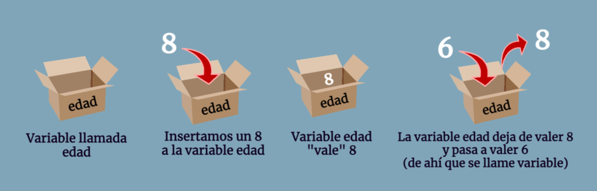
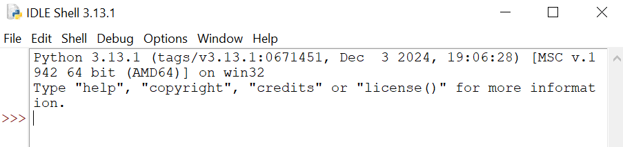
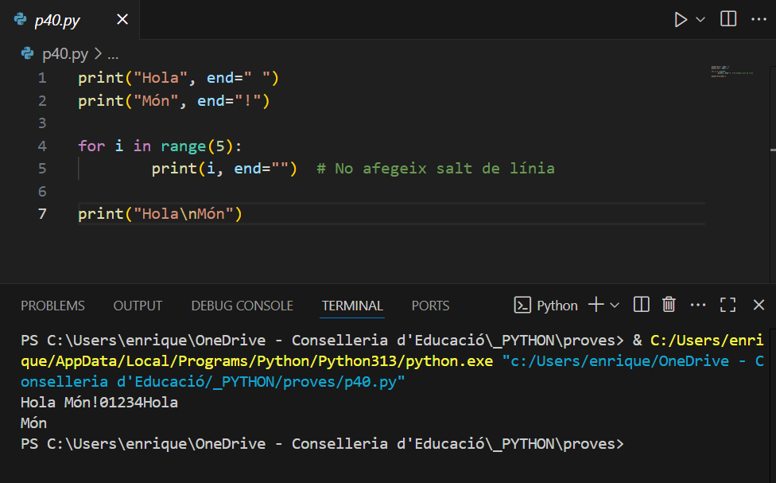
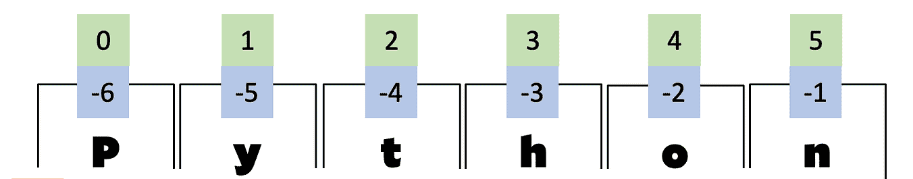
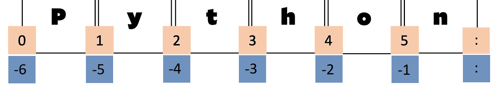

Identificació dels elements d’un programa informàtic
Identificar els elements d’un programa informàtic és fonamental per entendre com es construeixen i com funcionen. A continuació tens una explicació clara i estructurada dels principals elements d’un programa informàtic:
1. Instruccions
Les instruccions són les ordres que el programa dóna a l’ordinador perquè faci una acció concreta, com per exemple mostrar un missatge o un càlcul per pantalla.
print("Hola, món!")
>>> Hola, món!
print( 223 + 665 * 67)
>>> 59496 2. Variables
Les variables serveixen per emmagatzemar dades que poden canviar durant l’execució del programa.
nom = "Anna"
edat = 20
I en les instruccions, es pot posar una variable, però en execució se sustituirà per el seu valor en eixe moment
print (nom)
>>> Anna
3. Entrada i Sortida (Input/Output)
- Entrada: Permet rebre dades de l’usuari.
- Sortida: Mostra resultats per pantalla.
nom = input("Com et dius? ")
print("Hola, " + nom)4. Tipus de dades
Dades que pot gestionar un programa:
- Números:
int,float - Text:
str - Booleans:
True/False - Llistes, diccionaris, conjunts, etc. (estructures més avançades)
5. Estructures de control
Permeten controlar el flux d’execució del programa:
Hi ha part del codi que s'executa i part que no
- Condicionals (if/else): permeten executar diferents blocs de codi segons una condició.
edat = int(input("Quants anys tens ? "))
if edat >= 18:
print("Ets major d’edat")
else:
print("Ets menor d’edat")- Bucles (while, for): repeteixen una acció diverses vegades.
for i in range(5):
print(i)6. Funcions
Les funcions són blocs de codi reutilitzables que realitzen una tasca concreta.
def saludar(nom):
print("Hola, " + nom + "! Soc el teu programa de python. Que passes un bon dia !!")
saludar("Pau")
saludar("Miguel")
saludar("Sandra")7. Comentaris
O Documentació del codi
Text que s’inclou al codi per explicar què fa, però no s’executa.
# Aquesta funció suma dos nombres
def suma(a, b):
return a + b8. Mòduls i llibreries
Codi ja preparat que es pot reutilitzar per fer tasques més complexes sense haver de programar-les des de zero.
import math
print(math.sqrt(25)) # Arrel quadrada de 25Estructura i blocs fonamentals
Instruccions soltes
Per començar es poden fer servir instruccions senzilles de manera aillada
print("Hola mon")
print(34456 + 23345 ) Esta sera la forma en que treballarem en esta unitat
Estructura d'un programa
Encara que en Python, un programa pot ser una sola instrucció, sense encapçalament, ni res més, l'estructura bàsica d’un programa en Python sol seguir un esquema senzill i clar. A continuació et presento una estructura típica d’un programa Python ben organitzat
Important !!, no deixar espais en blanc al principi de les instruccions (si no son indentacions)
# 1. Imports (llibreries o mòduls externs o propis)
import math
import sys
# 2. Constants globals
PI = 3.14159
MAX_RETRIES = 5
# 3. Definició de funcions
def calcular_area_cercle(radi):
return PI * radi ** 2
def saludar(nom):
print(f"Hola, {nom}!")
# 4. Classe (opcional)
class Persona:
def __init__(self, nom, edat):
self.nom = nom
self.edat = edat
def presentar(self):
print(f"Soc {self.nom} i tinc {self.edat} anys.")
# 5. Bloc principal (punt d'entrada del programa)
def main():
saludar("Anna")
area = calcular_area_cercle(5)
print(f"L'àrea del cercle és: {area:.2f}")
p = Persona("Joan", 30)
p.presentar()
# 6. Comprovació si s'executa com a script principal
if __name__ == "__main__":
main()
Fitxers amb codi Python ( .py )
Totes les instruccions d'un programa s'han de guardar en un fitxer amb nom i amb extensió .py
Execució del fitxer
Per executar un programa Python, s'ha de cridar al binari python, amb un espai i el nom del fitxer que conté el programa python a executar
1. Des del terminal o línia de comandes
Obre el terminal i escriu:
python programa.pyO si tens python3 instal·lat:
python3 programa.py2. Des d’un entorn de desenvolupament (IDE)
- Obre el fitxer amb un editor com VS Code, VSCodium, Thonny o PyCharm(community o pro) .
- Prem el botó de "Play" (▶️) o selecciona "Executar" (de vegades s'ha de desplegar i buscar l'opció "Run Python File").
3. Amb permisos d’execució (Linux/macOS)
Fes que el fitxer sigui executable:
chmod +x programa.pyAfegeix la línia següent al principi del fitxer:
#!/usr/bin/env python3I després l’executes així:
./programa.pyPrograma vs Procés
La diferència entre programa i procés és fonamental en informàtica
📄 Programa
- És un fitxer de codi o conjunt d'instruccions escrites en un llenguatge de programació (com Python, C, etc.).
- No està en execució, només és el pla o recepta del que ha de fer l’ordinador.
- Exemples:
- Un fitxer
main.pyque conté codi Python. - Un executable com
firefox.exe.
- Un fitxer
Metàfora: És com una recepta de cuina escrita en paper.
⚙️ Procés
- És un programa en execució.
- Quan el sistema operatiu carrega un programa a la memòria i el comença a executar, esdevé un procés.
- Té el seu espai de memòria, variables, estat, identificador (PID), etc.
- Poden haver-hi diversos processos del mateix programa alhora (ex: dues finestres de Firefox).
Metàfora: És com un cuiner que està seguint una recepta a la cuina, ara mateix.
Taula resum
| Concepte | Programa | Procés |
|---|---|---|
| Què és | Codi font o binari | Programa en execució |
| Estat | Passiu | Actiu |
| Emmagatzematge | Disc dur | Memòria RAM |
| Únic? | Pot ser usat per molts processos | Cada procés és independent |
Exemple amb Python
# Programa:
hello.py → és només codi
# Procés:
python hello.py → quan l'executes, el sistema crea un procés
Depuració de programes
La depuració (o debugging) d’un programa en Python consisteix en el procés de localitzar i corregir errors (bugs) en el codi perquè funcioni correctament.
Eines i tècniques de depuració
1. Impressions (print)
print("Valor de x:", x)2. Ús d’excepcions (try / except)
try:
resultat = 10 / 0
except ZeroDivisionError:
print("No es pot dividir entre zero!")3. Depurador interactiu (pdb)
import pdb
pdb.set_trace()4. Depurador integrat en IDE
Entorns com VS Code, PyCharm o Thonny ofereixen depuració gràfica amb punts de ruptura, seguiment pas a pas i visualització de variables.
5. Comprovacions amb assert
assert x > 0, "x hauria de ser positiu"Objectiu de la depuració
- Que el programa funcioni correctament
- Que sigua estable en situacions imprevistes
- Que sigua fàcil de mantenir
Tipus d'errors
En Python, hi ha diversos tipus d’errors que poden aparèixer durant l'execució o la compilació d’un programa. Es poden classificar en dues grans categories: errors de sintaxi i errors en temps d’execució (exceptions).
Són errors que es produeixen quan el codi no segueix les regles de la sintaxi del llenguatge.
Són errors que es produeixen mentre el programa s’està executant.
Alguns tipus comuns
| Nom de l'error | Quan es produeix |
|---|---|
NameError |
Quan es fa referència a una variable que no existeix |
TypeError |
Quan es fa una operació amb tipus incompatibles |
ValueError |
Quan una funció rep un valor del tipus correcte però inadequat |
IndexError |
Quan es fa accés a una posició inexistent d'una llista o tupla |
KeyError |
Quan es fa accés a una clau que no existeix en un diccionari |
AttributeError |
Quan s'intenta accedir a un mètode o atribut inexistent |
ZeroDivisionError |
Quan es divideix per zero |
ImportError / ModuleNotFoundError |
Quan no es pot importar un mòdul |
FileNotFoundError |
Quan s'intenta obrir un fitxer que no existeix |
IndentationError |
Quan hi ha un problema amb la indentació |
El llenguatge de programació Python
Primer de tot, anem a fer-nos amb una Cheat Sheet
Una cheat sheet (fulla de referència ràpida) en el context d'un llenguatge de programació és un document concís i ben organitzat que resumeix les característiques, comandes, funcions i conceptes clau del llenguatge. Està dissenyada com una guia pràctica per a programadors, ajudant-los a recordar ràpidament sintaxi, mètodes i estructures comunes sense necessitat de consultar documentació extensa.
Podem trobar un exemple en el següent enllaç: Memento Python 3 (en anglès)
I per descomptat, també està disponible a la documentació oficial de Python: Documentació oficial de Python 3.12 (en castellà)
Variables i Tipus de Dades
Què és una variable en informàtica
En informàtica, una variable és un espai d’emmagatzematge en la memòria d’un programa que s’utilitza per a guardar un valor que pot canviar durant l’execució del programa.
Característiques clau d’una variable:
- Té un nom (identificador), com ara
edat,nom,comptador, etc. - Té un valor, com ara
25,"Joan",true, etc. - El valor pertany a un tipus de dada:
- Numeric Enter (nombre sencer), Decimal (float) , Complexe (complex)
- Text (cadena de caràcters)
- Booleà (
trueofalse) - None Tipus especial, buit
- Colecció Tipus avançats (es voran més endavant....)
- El seu valor pot modificar-se al llarg del temps que dure el procés.
Per a començar a utilitzar Python, és més recomanable utilitzar Python des del Shell o IPython (o IDLE en Windows), per la seva ràpida resposta a comandes senzilles.
En Python, no és necessari declarar el tipus d'una variable. Python el dedueix automàticament. Les variables es creen quan es realitza la seva primera assignació.
—Entra a Python i practica—
Utilitza python des d'una terminal/cmd, o IDLE
-- Exemple des de cmd, s'obri un cmd i s'executa l'ordre python
C:\Users\enrique>python
Python 3.13.1 (tags/v3.13.1:0671451, Dec 3 2024, 19:06:28) [MSC v.1942 64 bit (AMD64)] on win32
Type "help", "copyright", "credits" or "license" for more information.
>>>
o s'executa la utilitat IDLE

x = 10 # Número enter (integer) nombre = "Ana" # Cadena de text (String) nombre2 = 'Pedro' # String amb cometes simples precio = 15.5 # Número decimal (float) es_activo = True # Booleà (True o False) b = None # Valor nul, absència de valor a = b = c = 100 # Assignació múltiple, un sol valor userAge, userName = 30, 'Pedro' # Assignació múltiple, múltiples valors a, b = 23, 67 # Assignació múltiple a, b = b, a # Intercanvi de valors (sense utilitzar variable temporal !!)
S'evita l'ús d'una variable temporal per realitzar l'intercanvi:
# intercanvi típic de dos variables temp = a a = b b = temp
Per saber quin tipus de dada té una variable, podem utilitzar la funció type():
type(x) # Ens diu el tipus actual de la variable del v o del(v) # Deixa la variable lliure, sense tipus ni valor
Exemple en Python:
$ python3 >>> x = 10 >>> x 10 >>> type(x)
Amb del(a) es deixa de fer servir una variable (també amb del a).
Regles per als Noms de Variables (Identificadors)
Els noms de variables (o identificadors) són sensibles a majúscules i minúscules.
És a dir, username no és el mateix que userName.
Els noms de variables només poden contenir lletres majúscules, lletres minúscules, números (dígits) i el caràcter de subratllat (_),
i no poden començar amb un número.
A partir de Python 3, també es poden utilitzar lletres internacionals, com ara α, β, ñ, é, π, 变, etc.
Els noms de variables no poden ser paraules reservades de Python. És a dir, no es poden utilitzar paraules clau del llenguatge com a noms de variables. Per exemple, no es pot usar else com a nom de variable.
Prova d'equivocar-te intencionadament i familiaritza't amb els errors que transmet Python:
>>> else = 9
SyntaxError: invalid syntax
>>> 5var = 67
SyntaxError: invalid syntax
Paraules Reservades de Python
Python té un conjunt de paraules reservades que no poden ser utilitzades com a noms de variables, funcions o qualsevol altre identificador. Aquestes paraules tenen un significat especial dins del llenguatge i són part del seu sistema de sintaxi.
Per a veure quines són les paraules reservades de Python, podem utilitzar el mòdul keyword:
import keyword
print(keyword.kwlist)
Algunes de les paraules reservades de Python inclouen:
False await else import pass None break except in raise True class finally is Return and continue for lambda try as def from nonlocal while assert del global not with async elif if or yield
Aquestes paraules no poden ser utilitzades com a noms de variables, ja que tenen un significat especial en Python.
Assignació de Variables i Literals en Python
En la part esquerra de l'assignació s'indica la variable en què s'emmagatzemarà el valor. En la part dreta de l'assignació s'indica un literal que serà interpretat per Python.
Els literals són les dades simples que Python és capaç de gestionar: números o cadenes de text.
Números:
Python pot manejar diversos tipus de números:
- Enters (són números sencers, com 10, -5, 0)
- Decimals (números amb punt decimal, com 3.14, -0.5, 0.0)
- Complexos (números amb una part imaginària, com 1 + 2j)
- En notació decimal, octal o hexadecimal: es poden representar números en diferents bases numèriques, com
0oper a octals (ex.0o10),0xper a hexadecimals (ex.0xFF), i en decimal com és habitual.
Cadenes:
Les cadenes de text poden estar entre cometes simples ('Hola') o dobles ("Hola").
Valors lògics:
Els valors lògics en Python són:
- True (cert)
- False (fals)
True no és igual que TRUE , ni true 👀
Valor nul:
El valor nul en Python és None, el qual s'utilitza per representar l'absència de valor.
Exemple d'assignació:
x = 10 # Un número enter y = 3.14 # Un número decimal z = "Hola" # Una cadena de text a = True # Un valor lògic b = None # Un valor nul
Recorda: None és distint de none, True és distint de true
Escritura de dades en pantalla en Python
Funció print()
La funció print() en Python és una de les més utilitzades i serveix per a mostrar missatges, dades o qualsevol eixida per pantalla a la consola.
És molt versàtil i permet personalitzar què i com es mostra la informació.
Per defecte, print() afegeix un salt de línia (\n) al final de cada línia impresa.
>>> a = 3332 + 23223 * 23
>>> print(a)
>>> print(a + 23334)
>>> print("Hola, món!")
La funció print() adquireix més sentit quan s’utilitza en un entorn no interactiu, com ara en programes amb extensió .py que s’executen directament des de la línia d’ordres del sistema operatiu.
==> A partir d'ací, utilitzem VSCode
Per utilitzar VSCode, s'ha de posar el codi en un fitxer, i el fitxer dins d'una carpeta
Primer) Crear carpeta
Segon) Obrir el VSCode, i des del VSCode obrirem un projecte (carpeta)
. ==> Open Folder
Tercer) Crear fitxer (new file)
Quart) Escriure codi
Cinqué) Executar codi (click dret sobre el codi -> Run Python File in Terminal)
.
Tutorial ràpid de VSCode-Python
Personalització amb l'argument end
Per defecte, print() imprimeix un salt de línia al final. Aquest comportament es pot modificar amb el paràmetre end.
print("Hola ", 33, " mon !")
print("Hola", end=" ")
print("Món", end="!") \n:
print("Hola\nMón") Exemples

Personalització amb l'argument sep
L'argument sep és (opcional):
- Defineix el separador entre els objectes.
- Per defecte és un espai
' '.
a = 3.14153345
print ( a, 234, 'pepe')
print ( a, 234, 'pepe', sep='>>')Comentaris en el Codi de Python
Els comentaris en Python serveixen per afegir notes o explicacions al codi que no són executades pel intèrpret de Python. Són útils per fer que el codi sigui més comprensible tant per a tu com per a altres persones que el llegeixin.
Formes de fer comentaris
Hi ha dues formes de posar comentaris en Python: en una línia o en múltiples línies.
- Comentari d'una línia: Els comentaris d'una sola línia comencen amb el símbol
#. El codi que segueix a aquest símbol serà ignorat per l'intèrpret. - Comentari de múltiples línies: Els comentaris de diverses línies es poden crear amb cometes dobles triples (
""" ... """) o cometes simples triples (''' ... ''').
Exemples de Comentaris:
# Això és un comentari d'una línia, pot anar també darrere de codi
x = 10 # Assignació d'un valor a x
""" Això és un comentari
de diverses línies: Comentari Multilinia """
y = 20 # Assignació d'un valor a y
''' Amb tres cometes simples
també es poden crear comentaris de diverses línies '''
z = 30 # Assignació d'un valor a z
Alguns usos dels comentaris són:
- Explicar el propòsit del codi
- Anotar recordatoris o tasques pendents (TODOs)
- Desactivar parts del codi temporalment
- Documentar el codi (com funciona) **
- Ajuda en la depuració
Literals
Un literal en Python (i en programació en general) és un valor fix escrit directament al codi, que no es calcula ni es deriva de cap altra expressió. És simplement una representació literal d’un valor.
Literals numèrics
Podem representar números enters en diferents bases:
- Decimal: Representació habitual. Exemples:
345 - Binària: Anteposant
0b. Exemples:0b101001001 - Octal: Anteposant
0o. Exemples:0o546 - Hexadecimal: Anteposant
0x. Exemples:0xf9af9d
Els números reals (amb decimals), en python float, es representen separant la part entera de la decimal amb un punt .:
123.50 0.56 .56 12. 12.00També poden usar notació científica:
1.2e3 5e-2Els números complexos (amb part real i imaginària) s'escriuen amb una j o J al final de la part imaginària:
1+2j 8+15JEs pot representar l'infinit amb:
float("inf") float("-inf")Tots són objectes
En Python, tots els elements són objectes, fins i tot els literals. Quan utilitzem un literal, Python crea un objecte amb un identificador únic, un tipus i un valor.
Pots obtindre l'identificador d'un objecte amb la funció id():
x = 100
print(id(x)) => 140729130946568Literals Strings o Cadenes
Els literals de tipus string van delimitats per cometes simples ' o dobles ", o també per cometes triples (''' o """).
En Python, les cometes dobles i simples són equivalents, encara que en altres llenguatges de programació poden no ser-ho.
print("Això és una cadena") # Correcte
print('Això és una cadena') # CorrecteSi utilitzem cometes simples, la cadena ha de començar i acabar amb cometes simples (no amb dobles), i viceversa:
print("Això és una cadena') # Error de sintaxi
print("Això "és una cadena") # Error de sintaxiCometes triples
Les cometes triples permeten escriure cadenes que ocupen diverses línies, útil quan es vol superar el límit recomanat de 79 caràcters per línia:
print("""Això és una cadena
que ocupa
diverses línies""")També es pot fer amb el caràcter \
El caràcter \ permet continuar la cadena en una altra línia sense trencar-la:
print("Això és una cadena \
que ocupa \
diverses línies")Comportament de les línies amb \
Nota: En aquests casos, el resultat és una cadena contínua, sense salts de línia. Si vols realment afegir salts, cal usar \n.
Inserir cometes del mateix tipus
Si vols utilitzar cometes del mateix tipus que el delimitador dins de la cadena, cal escapar-les amb el caràcter de barra invertida \:
print("Això és una cadena amb cometes dobles: \"exemple\"") Caràcters especials dins de cadenes
\"cometa doble dins de cometes dobles\'cometa simple dins de cometes simples\nsalt de línia\ttabulació horitzontal\vtabulació vertical\\barra invertida literal
print("Hola\tmón") # Hola món
print("Línia 1\nLínia 2") # Línia 1
# Línia 2
print("Ruta: C:\\fitxers\\usuari") # Ruta: C:\fitxers\usuariInserció de valors dins de cadenes
Python ofereix diversos mecanismes per a inserir valors de variables dins de cadenes de text, com ara:
- Format clàssic:
"Hola %s" % nom - Mètode format():
"Hola {}".format(nom) - f-strings (des de Python 3.6):
f"Hola {nom}"
3. f-strings (des de Python 3.6)
-- Forma moderna, clara i recomanada --
nom = "Joan"
edat = 25
a, b = 4, 5
pi= 3.1415926535897932
frac = 13/7
monto = 1234567.89
numero = -42
n = 42
percent = 1/4
print(f"El meu nom és {nom} i tinc {edat} anys.")
print(f"La suma de {a} i {b} és {a + b}.")
print(f"Sencer |{n}|") # n es un nombre sencer
print(f"Sencer |{n:9}|") # Ocupant un espai fixe i alinea a la dreta (nombre sencer)
print(f"Sencer |{n:09}|") # Ocupant un espai fixe ,alinea a la dreta, i farcit de 0s
print(f"El valor de pi és |{pi}|") # com pi té decimals....
print(f"El valor de pi és |{pi:12}|") # ocupant 12 posicions? !LA PART sencera!!
print(f"El valor de pi amb 3 decimals és |{pi:.3f}|") # Ara si, sols 3 decimals
print(f"El valor de pi amb 3 decimals és |{pi:10.3f}|") # ocupant 10 posicions i posant 3 decimals
# El . decimal ocupa una posició !!
print(f"Percentatge: {percent:.2%}") # 25.00%
print(f"{edat=}") # Per fer Depuració: edat=254. Alineació i formats especials
print(f"|{nom:<10}|") # A l'esquerra
print(f"|{nom:>10}|") # A la dreta
print(f"|{nom:_>10}|") # A la dreta amb "_"
print(f"|{nom:^10}|") # Centrat
print(f"|{nom:*^10}|") # Centrat amb "*"
**L'alineació també funciona amb strings i floats
print(f"Decimal: {n}, Binari: {n:b}, Hexadecimal: {n:x}, Octal: {n:o}") # conversio a una altra base
print(f"Amb separador de milers: {monto:,.2f}") # I dos decimals
print(f"Amb signe explícit: {numero:+d}") # -42 Siga positiu o negatiu Lectura de dades per teclat en Python
En qualsevol llenguatge de programació és essencial la entrada de dades a un programa perquè aquest puga reaccionar de diferents maneres. Aquestes dades poden servir com a base per a càlculs o per a prendre decisions, realitzant una acció o una altra segons el valor introduït.
Ús de la funció input()
En Python, utilitzem input() per demanar a l’usuari que introduïsca dades per teclat. Aquestes dades es poden usar posteriorment dins del programa.
numero1 = input("Digue'm el primer número: ") # Aquí, numero1 serà una cadena (string)
# El programa es quedarà esperant que l'usuari escriga un valor i premeta intro.
# Aquesta entrada s'assignarà a la variable numero1 com a text.
numero1 = int(numero1) # Cal convertir-la a enter si volem fer operacions numèriques.
print(numero1, "+", numero2, "=", numero1 + numero2)
print("{numero1} + {numero2} = ", numero1 + numero2) # No fa interpolació real Exemple d’error comú
n1 = input("Digue'm el primer número: ")
n2 = input("Digue'm el segon número: ")
print("La suma és", n1 + n2) # Açò farà una concatenació de cadenes!
# Què ha passat???
print("La suma és", int(n1) + int(n2)) # Açò sí que suma nombres correctament Entrada de múltiples valors separats per comes
També podem demanar a l’usuari que introduïsca diversos valors separats per comes (o altres caràcters), i convertir-los a una llista de números:
entrada = input("Introdueix números separats per comes: ")
numeros = entrada.split(',') # Separa cada valor utilitzant la coma com a separador
# Convertim cada valor a enter, eliminant espais en blanc
numeros = [int(num.strip()) for num in numeros]
print("Llista de números:", numeros) Conclusió
- La funció
input()sempre retorna cadenes de text. - És necessari convertir aquestes cadenes a nombres si volem fer càlculs.
- Podem usar
split()istrip()per processar entrades múltiples.
Constants en Python
En Python, NO hi ha suport natiu per constants, però es poden definir per convenció amb noms en majúscules:
PI = 3.14159
VELOCITAT_DE_LLUM = 299_792_458
MAX_INTENTS = 5Python no impedeix modificar aquestes constants:
PI = 3 # Això està permès, però no recomanatTambé pots posar-les en un mòdul separat anomenat constants.py:
# constants.py
PI = 3.14159
G = 9.81I importar-les des del fitxer principal:
import constants
print(constants.PI)Important: Aquesta tècnica es basa en la disciplina del programador, no en la protecció del llenguatge.
Immutabilitat en Python
En Python, immutabilitat vol dir que un objecte no es pot modificar després de ser creat.
No es el mateix concepte que CONSTANT. Es vorà més endavant
Operadors en Python
Expressions vs Literals en Python
Què és un literal?
Un literal és un valor escrit directament al codi. Exemples:
42
"Hola"
3.14
True
[1, 2, 3]Què és una expressió?
Una expressió és qualsevol combinació de literals, variables i operadors que retorna un valor:
5 + 3
nom + " és aquí"
len([1, 2, 3])
a * b - cOperadors Aritmètics
Els operadors aritmètics permeten realitzar operacions matemàtiques bàsiques.
suma = 10 + 5 # 15
resta = 10 - 5 # 5
multiplicació = 10 * 5 # 50
divisió = 10 / 5 # 2.0 NO ENTERO, decimal o float
divisió_entera = 10 // 3 # 3 (enter)
mòdul = 10 % 3 # 1 (resto)
exponent = 2 ** 3 # 8 (2 elevat a 3) enter
exponent = 2 ** -3 # 0,125 (2 elevat a -3) float
exponent = 2.2 ** 3 # 10.64800 float
exponent = 64 ** 0.5 # 8.0 float arrel quadrada Important !!, L'operador / torna sempre un valor del tipus float (decimal) encara que els dos operandos siguen sencers
i els operadors // i % tornen valors de tipus sencer (int) si els dos operandos son sencers pero torna float si algun
operando es float
Precedència
| Precedència | Operador | Descripció | Associativitat |
|---|---|---|---|
| 1 | () |
Parèntesi | Dins a fora |
| 2 | ** |
Potenciació | Dreta a esquerra |
| 3 | +x, -x |
Positiu, Negatiu (unari) | Dreta a esquerra |
| 4 | *, /, //, % |
Multiplicació, Divisió, Divisió entera, Mòdul | Esquerra a dreta |
| 5 | +, - |
Suma, Resta | Esquerra a dreta |
Exemples
result = 3 + 4 * 2 # 11
result = (3 + 4) * 2 # 14
result = 2 ** 3 ** 2 # 512
result = (2 ** 3) ** 2 # 64
result = -3 ** 2 # -(3 ** 2) = -9
result = (-3) ** 2 # (-3) ** 2 = 9 Operadors d'Assignació
Els operadors d'assignació permeten modificar el valor d'una variable de manera concisa.
= # Assignació
+= # x += 1 equivaleix a x = x + 1
-= # x -= 1 equival a x = x - 1
*= # x *= 1 equival a x = x * 1
/= # x /= 1 equival a x = x / 1
//= # x //= 1 equival a x = x // 1
%= # x %= 1 equival a x = x % 1
**= # x **= 1 equival a x = x ** 1 Python no té els operadors ++ ni -- com en C/C++ o Java. Si escrius i++ o i--, obtindràs un error de sintaxi
Aquest disseny és coherent amb la immutabilitat dels ints a Python i evita confusions sobre l’ordre d’avaluació
Operadors de Comparació
Els operadors de comparació s'utilitzen per comparar dos valors.
5 == 5 # True (igual) ¡¡ el == no és el mateix que el = !!
5 != 3 # True (diferent)
5 < 10 # True (menor que)
5 > 10 # False (major que)
5 <= 10 # True (menor o igual que)
5 >= 10 # False (major o igual que) En Python, l’operador <> era usat com a operador de desigualtat (com !=) en versions antigues de Python (com Python 2).
L’ús de <> ja no és vàlid i donarà un error de sintaxi. Per comparar desigualtats, s’utilitza només !=
Operadors Lògics
Els operadors lògics s'utilitzen per combinar expressions booleanes.
True and False # False
True or False # True
not True # False Precedència
- not
- and
- or
La precedència de les comparacions està per baix dels operadors aritmètics (+, -, *, /, etc.) i per damunt dels operadors lògics (not, and, or).
Exemple
x = 3
print(x + 2 > 4 and x < 10) S’avalua així: x + 2 → 5 5 > 4 → True x < 10 → True True and True → True
Short Circuit en Python
Tambe es pot dir camí curt, o drecera
En una operació lògica, quan s'estiga segur del resultat, es deixa d'avaluar i es retorna el resultat.
Exemple de drecera de l'operador or
a,b,c= 20,40,50
c>b or a>b or b>c or b>a
# En esta expresió, con c>b és True i tot el que ve darrere son or,
# ja no cal avaluar més, perquè el resultat serà True, passe el que passe darrereEn els and passa algo paregut també
c<b and a>b or b>c or b>a
# En esta expresió, con c<b és False i tot el que ve darrere son and,
# ja no cal avaluar més, perquè el resultat serà False, passe el que passe darrerePython permet comparacions encadenades:
x = 3
print(1 < x < 5)
# Això s’interpreta com: (1 < x) and (x < 5) I
a < b <= c != d
# Aquesta expressió equival a: (a < b) and (b <= c) and (c != d) Operadors d'Identitat
Els operadors d'identitat comproven si dues variables referencien al mateix objecte de memòria.
a is b
a is not b Operadors de Pertenència o Membresia
Els operadors de membresia s'utilitzen per comprovar si un element està present en una col·lecció com una cadena, llista, etc.
'a' in 'hola' # True
'a' not in 'hola' # False Totes les operacions de comparació (<, <=, >, >=, ==, !=, is, is not, in, not in) tenen la mateixa precedència entre elles. Això vol dir que es poden encadenar i Python les interpreta d’esquerra a dreta.
| Tipus d'operador | Exemple | Precedència (resum) |
|---|---|---|
| Aritmètics | +, -, *, / |
Alta — s'avaluen abans que les comparacions |
| Comparació | <, <=, ==, !=, is, in |
Mateixa precedència entre elles; permeten encadenament (p. ex. a < b <= c) |
| Lògics | not, and, or |
Baixa — s'apliquen després de les comparacions |
Operadors a Nivell de Bits (Bitwise)
Els operadors bitwise operen sobre els bits individuals de les variables.
5 & 3 # AND bit a bit
5 | 3 # OR bit a bit
5 ~ 3 # NOT bit a bit
5 ^ 3 # XOR bit a bit
5 << 3 # desplaçament a l'esquerra bit a bit
5 >> 3 # desplaçament a la dreta bit a bit Exemple
0101 (5)
& 0011 (3)
-------
0001 (1)
Problemes de Precisió amb Nombres Decimals
A causa de la representació interna dels nombres decimals, es poden obtenir resultats poc precisos en algunes operacions.
a = 0.1
b = 0.2
a + b # 0.30000000000000004 En general, qualsevol fracció que en base 10 és "neta" (com 0.1 o 0.2) pot ser problemàtica, perquè en base 2 són fraccions periòdiques infinites, i Python les talla a una aproximació.
Aquest problema no es produeix en totes les operacions, però és important tenir-ho en compte. Per a comparar aquests valors de manera precisa, es pot utilitzar math.isclose().
import math
math.isclose(0.1 + 0.2, 0.3) # True O intentar salvar el problema utilitzant round()
print (round(0.1 + 0.2, 2) )Operadors sobre Strings en Python
Definir Strings
Pots definir cadenes de text utilitzant cometes simples ('), dobles (") o triples (''' o """).
s = 'Hola'
s2 = "Mon"
s3 = ''' Hola mon, amb
més d'una linea ''' Concatenació de Strings
La concatenació permet unir dues o més cadenes de text.
saludo = "Hola" + " " + "mundo"
print(saludo) # Hola mundo Repetició de Strings
La repetició d'una cadena es pot aconseguir mitjançant l'operador de multiplicació.
print("Hola" * 3) # HolaHolaHola Comparació de Strings
Les cadenes es poden comparar utilitzant els operadors de comparació. Es distingeixen les majúscules de les minúscules.
print("Hola" == "hola") # False (distinció de majúscules/minúscules)
print("a" < "b") # True (ordre alfabètic) També es pot fer amb > o != Longitud de Strings
Les cadenes tenen una longitud, i és molt útil saber-la.
cadena = 'Hola Python'
x = len(cadena)
print ( f"La cadena té una longitud de {x} caràcters ") 
Accés per Índex
Pots accedir als caràcters d'una cadena mitjançant el seu índex. Recorda que l'índex comença des de 0. Però també es pot indicar el final amb un -1 (ùltim caràcter)
texto = "Python"
print(texto[0]) # P
print(texto[-1]) # n (últim caràcter) # !! Però no es pot !!
texto[0]="p" # Dona error 
Accés per Slicing (Rebanat)
El slicing permet extreure subcadenes mitjançant un rang d'índexs.
print(texto[0:4]) # Pyth (índexs de 0 a 3)
print(texto[::2]) # Pto (caràcters del 0 al 5 de 2 en 2)
print(texto[1:4:2]) # yh (caràcters 1 al 3 de 2 en 2)
print(texto[:3]) # Hol (des del principi fins a l'índex 2)
print(texto[2:]) # thon (de l'índex 2 fins al final)
print(texto[:-2]) # Pyth (des del principi fins al -3)
print(texto[-3:]) # hon (del -3 fins al final)
Iteració sobre Strings
Pots recórrer una cadena de text caràcter per caràcter mitjançant un bucle for.
Exemple simple
texto = "Python"
for letra in texto:
print(letra) Exemple animat
import time
def escriu_paraula(paraula, retard=0.3):
for lletra in paraula:
print(lletra, end="", flush=True)
time.sleep(retard)
print() # Salt de línia al final
# Exemple d'ús
escriu_paraula("Hola mon, hui escriurem codi en Python", 0.1) Immutabilitat de Strings
Les cadenes de text en Python són immutables, això vol dir que no es poden modificar després de la seva creació.
>>>texto[0] = 'J'
Traceback (most recent call last):
File "", line 1, in
texto[0] = 'J'
TypeError: 'str' object does not support item assignment En el tema2, Apartat "funcions de cadenes en python" es voran més utilitats
Conversió de tipus en Python
En Python, la conversió de tipus (també anomenada casting) fa referència a transformar un valor d’un tipus de dada a un altre, per exemple, convertir un nombre a cadena de text, o una cadena a nombre.
Conversió implícita
Python a vegades converteix tipus automàticament quan no hi ha pèrdua d’informació.
enter = 5
decimal = 2.5
resultat = enter + decimal
print(resultat) # 7.5
print(type(resultat)) # <class 'float'>
Ací, Python converteix automàticament enter (int) a float per fer la suma.
Conversió explícita
Es fa manualment amb funcions com:
int()– converteix a enterfloat()– converteix a decimalstr()– converteix a cadena de textbool()– converteix a booleà (TrueoFalse)
Exemples:
De cadena a nombre
numero = int("10") # ara és 10 (int)
decimal = float("3.14") # ara és 3.14 (float)De nombre a cadena
text = str(123) # "123"De nombre a booleà
print(bool(0)) # False
print(bool(5)) # True
print(bool(0.0))De cadena a booleà
print(bool("")) # False (cadena buida)
print(bool("hola")) # TrueAltres
print ( 5 + True )
print ( True + True)
print(int(True)) Altres, encara que no és conversió
La funció round() no és de conversió exactament, però molt útil per llevar nombres decimals no desitjats
x = 1 / 3
print( x ) # 0.3333333333333333
y = round(x,2)
print (y) # 0.33 ⚠️ Compte amb errors comuns
Si intentes convertir una cadena que no representa un número vàlid, obtindràs un error:
int("hola") # ValueErrorExercicis
Els exercicis i tests corresponents a esta unitat es troben en Aules
Hi ha plataformes web per practicar i aprendre codi. A continuació s'indiquen algunes per ampliar els recursos a l'abast dels estudiants
Encara que no s'ha vist la utilització de funcions externes, es pot avançar alguna concreta per enriquir els exercicis proposats.
# Neteja de pantalla / consola
import os
os.system('clear') # en Linux
# Generar un nombre aleatori from random import randrange numaleatori = randrange(1,21) # Per exemple, entre 1 i 21
# Neteja consola millorat
import os
def neteja():
if os.name=='nt': # En windows 'nt'
os.system('cls')
else: # En linux y macOS 'posix'
os.system('clear')
# En el cos del programa
neteja()